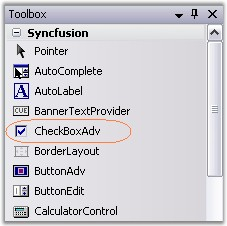
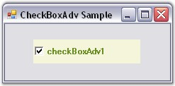

The CheckBoxAdv control can be created in the following ways.
The following steps illustrate how to create a CheckBoxAdv control through designer.
· Create or open a Windows Forms project.
· Add an CheckBoxAdv Control from the toolbox onto the form by dragging and dropping it on the form or double clicking the control.

Figure 608: CheckBoxAdv in Toolbox
· Set the desired properties for the control through the Property grid.
· Run the application.

Figure 609: CheckBoxAdv created Through Designer
See Also
The CheckBoxAdv control can be created programmatically as detailed below:
· Create a C# or VB.NET application though Visual Studio.
· Add the required assembly references.
· Include the required namespace.
|
[C#]
using Syncfusion.Windows.Forms.Tools; |
|
[VB.NET]
Imports Syncfusion.Windows.Forms.Tools |
· Create an instance of the CheckBoxAdv control class.
|
[C#]
private Syncfusion.Windows.Forms.Tools.CheckBoxAdv checkBoxAdv1; this.checkBoxAdv1 = new Syncfusion.Windows.Forms.Tools.CheckBoxAdv(); |
|
[VB.NET]
Private checkBoxAdv1 As Syncfusion.Windows.Forms.Tools.CheckBoxAdv Me.checkBoxAdv1 = New Syncfusion.Windows.Forms.Tools.CheckBoxAdv() |
· Set the properties and add the CheckBoxAdv control to the form.
|
[C#]
this.checkBoxAdv1.Text = "checkBoxAdv1"; this.checkBoxAdv1.Font = new System.Drawing.Font("Microsoft Sans Serif", 8.25F, System.Drawing.FontStyle.Bold, System.Drawing.GraphicsUnit.Point, ((byte)(0))); this.checkBoxAdv1.ForeColor = System.Drawing.Color.OliveDrab; this.checkBoxAdv1.BackColor = System.Drawing.Color.Beige;
// Add the CheckBoxAdv control to the Form. this.Controls.Add(this.radioButtonAdv1); |
|
[VB.NET]
Me.checkBoxAdv1.Text = "checkBoxAdv1" Me.checkBoxAdv1.Font = New System.Drawing.Font("Microsoft Sans Serif", 8.25F, System.Drawing.FontStyle.Bold, System.Drawing.GraphicsUnit.Point, CByte((0))) Me.checkBoxAdv1.ForeColor = System.Drawing.Color.OliveDrab Me.checkBoxAdv1.BackColor = System.Drawing.Color.Beige
// Add the CheckBoxAdv control to the Form. Me.Controls.Add(Me.radioButtonAdv1) |
Figure 610: CheckBoxAdv created Through Code
See Also